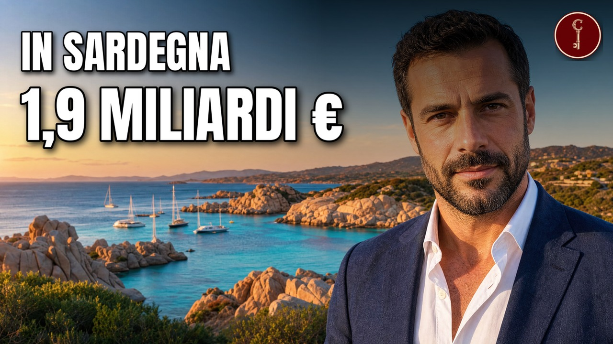

Sardegna
Le 12 famiglie sarde più RICCHE (una ha cominciato con i carri a cavallo)

Il video esce su YouTube presto.
Fonti della ricerca
- lebensmittelpraxis.de
- atoka.io
- unionesarda.it
- wikipedia.org
- linkiesta.it
- winebow.com
- forbes.it
- winenews.it
- thedrinksbusiness.com
- meranowinefestival.com
- avvinare.com
- winewithseth.com
- lavocedinewyork.com
- unionesarda.it
- fradelloni.it
- fradelloni.it
- ondulor.com
- ondulor.com
- ondulor.com
- ondulor.com
- aziende.it
- unionesarda.it
- atoka.io
- gruppoacentro.it
- unionesarda.it
- unionesarda.it
- unionesarda.it
- money.it
- ecoseven.net
- italpress.com
- intesasanpaolo.com
- charmingsardinia.com
- linkiesta.it
- qualitytravel.it
- ilsole24ore.com
- forbes.it
- companyreports.it
- agenziaentrate.gov.it
- companyreports.it
- pinnaformaggi.it
- atoka.io
- pinnaformaggi.it
- gamberorossointernational.com
- impresapellegrini.it
- impresapellegrini.it
- impresapellegrini.it
- impresapellegrini.it
- impresapellegrini.it
- impresapellegrini.it
- impresapellegrini.it
- gruppocellino.it
- gruppocellino.it
- dinamobasket.com
- ice.it
- unionesarda.it
- unionesarda.it
- unionesarda.it
- molinosimec.it
- ubibanca.it
- shippingitaly.it
- ivi.company
- federmetano.it
- oristano.it
- ivi.company
- federmetano.it
- agcm.it
- unionesarda.it
- forbes.it
- ilsole24ore.com
- cdp.it
- esmmagazine.com
- forbes.it
- unionesarda.it
- unionesarda.it
- spar-international.com
- dissapore.com
- companyreports.it
- isprambiente.gov.it
- wikipedia.org
- italpress.com
- qds.it
- fluorsid.com
- borsaefinanza.it
- wikipedia.org
- fluorsid.com
- ansa.it
- wikipedia.org
- argiolas.it
- companyreports.it
- companyreports.it
- companyreports.it
- companyreports.it
- testonisrl.com
- testonisrl.com
- pinnaformaggi.it
- pinnaformaggi.it
- atoka.io
- molinosimec.it
- companyreports.it
- breakingtravelnews.com
- unionesarda.it
Attribuzioni di immagini e video
Cala Goloritze o
delaere · CC BY 2.0

delaere · CC BY 2.0
Torre della Pelosa - Stintino (SS)
CapoDelFalcone.JPG: Mihael Grmek derivative work: Gianni Careddu (talk) · CC BY-SA 3.0

CapoDelFalcone.JPG: Mihael Grmek derivative work: Gianni Careddu (talk) · CC BY-SA 3.0
Cagliari, vista da piazzetta mercede mundula 00
Sailko · CC BY-SA 4.0

Sailko · CC BY-SA 4.0
Chiesa Santa Maria Sibiola Serdiana
www.synkadv.com · CC BY 2.0

www.synkadv.com · CC BY 2.0
Vinitaly 2011 sign
Bruno Cordioli · CC BY 2.0

Bruno Cordioli · CC BY 2.0
Cagliari haven 2018 3
Smiley.toerist · CC BY-SA 4.0

Smiley.toerist · CC BY-SA 4.0
Bastione di Saint Remy - Cagliari, Italy 2024-03-28
Ryan Hodnett · CC BY-SA 4.0

Ryan Hodnett · CC BY-SA 4.0
1970 European Car of the Year - Fiat 128 - Umberto Agnelli & Dante Giacosa - CROPPED
Original: Eric Koch for Anefo / Derivative work: Danyele · CC BY 4.0

Original: Eric Koch for Anefo / Derivative work: Danyele · CC BY 4.0
Sardegna palau - panoramio
brunobarbato · CC BY 3.0

brunobarbato · CC BY 3.0
Rena Bianca Beach, Santa Teresa Gallura
Or kriminal · CC BY-SA 3.0

Or kriminal · CC BY-SA 3.0
Tourists at Capo d'Orso, Palau, Sardinia, Italy
Marek Ślusarczyk (Tupungato) Photo gallery · CC BY 3.0

Marek Ślusarczyk (Tupungato) Photo gallery · CC BY 3.0
Badesi - Spiaggia di Poltu Biancu - panoramio
Alessandro Zenari · CC BY-SA 3.0

Alessandro Zenari · CC BY-SA 3.0
Aggius, panorama (01)
Gianni Careddu · CC BY-SA 4.0

Gianni Careddu · CC BY-SA 4.0
Sardinia, Sassari, Piazza d'Italia, Prefettura, monumento a Vittorio Emanuele II
Dr. Thomas Liptak · CC BY-SA 4.0

Dr. Thomas Liptak · CC BY-SA 4.0
Porto Cervo 85DSC 0168 (49690429046)
János Korom Dr. >17 Million views from Wien, Austria · CC BY-SA 2.0

János Korom Dr. >17 Million views from Wien, Austria · CC BY-SA 2.0
20260421 Supramonte1
Nivora · CC BY-SA 4.0

Nivora · CC BY-SA 4.0
Thiesi - Panorama (02)
Gianni Careddu · CC BY-SA 4.0

Gianni Careddu · CC BY-SA 4.0
Poetto beach
Chris · CC BY 2.0

Chris · CC BY 2.0
Arsenale la maddalena 2
br1dotcom · CC BY 2.0

br1dotcom · CC BY 2.0
Cese di Preturo
Lasacrasillaba · CC BY-SA 3.0

Lasacrasillaba · CC BY-SA 3.0
Santa giusta, cattedrale di santa giusta, 1135-45, esterno 01
Sailko · CC BY 3.0

Sailko · CC BY 3.0
Sanluri - Panorama (01)
Gianni Careddu · CC BY-SA 4.0

Gianni Careddu · CC BY-SA 4.0
Santa Teresa Gallura - Capo Testa (04)
Gianni Careddu · CC BY-SA 3.0

Gianni Careddu · CC BY-SA 3.0
Tiscali
The original uploader was Myworld at Italian Wikipedia. · CC BY-SA 2.0

The original uploader was Myworld at Italian Wikipedia. · CC BY-SA 2.0
Stagno Santa Giusta
Cristiano Cani · CC BY 2.0

Cristiano Cani · CC BY 2.0
Skyline terrazze Duomo
Cris*Milano · CC BY-SA 4.0

Cris*Milano · CC BY-SA 4.0
Unipol Domus interior from mainstand
Municipality of Cagliari · CC BY-SA 3.0 it

Municipality of Cagliari · CC BY-SA 3.0 it
Stintino - La Pelosa (03)
Gianni Careddu · CC BY-SA 4.0

Gianni Careddu · CC BY-SA 4.0
Scene ricostruite
Alcune scene sono ricostruite con l'intelligenza artificiale (45 immagini e 3 clip). Non sono documenti né fotografie d'epoca.
Mappe
- Confini amministrativi italiani (openpolis/geojson-italy, dati ISTAT) · CC BY 4.0 · fonte